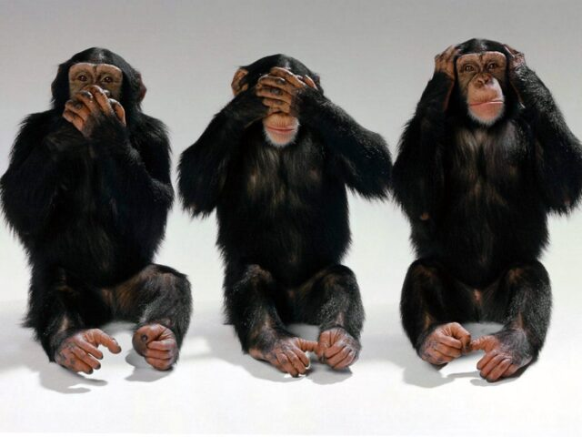
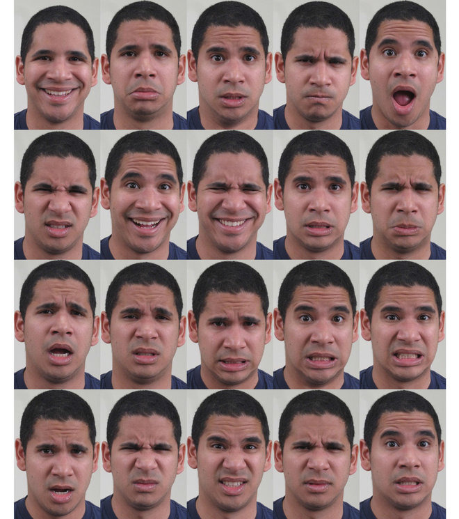
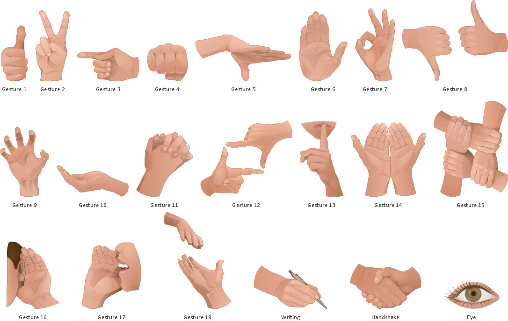

Luckily, we can communicate in a much more complex way.
We can combine what we say with our body language or signs to give our communication more depth.
The rest lies in your body language:
You need to be aware of:
With a little conscious effort to improve your body language, you stand a better chance of scoring that job, that date, or simply being seen as the engaging and genuine person that you are.
Body language includes more than just the slouch factor or where you put your hands.
In fact, it includes:
The study of human use of space looks at the effects that population density has on behaviour, communication, and social interaction.
The distance surrounding a person forms a space.
Personal space is the region surrounding a person which they regard as psychologically theirs.
Most people value their personal space and feel discomfort, anger, or anxiety when their personal space is entered.
Another zone is used for conversations with friends, to chat with associates, and in group discussions.
A further zone is reserved for strangers, newly formed groups, and new acquaintances.
A fourth zone is used for speeches, lectures, and theatre. Public distance is the range reserved for larger audiences.
How much personal space do you need?
Entering somebody’s personal space is normally an indication of familiarity and sometimes intimacy.
In our community, especially in crowded spaces, it can be difficult to maintain personal space, for example when in a crowded train, elevator, or street.

Regulators are nonverbal messages that accompany speech to control or regulate what the speaker is saying.
These might include nodding your head to show that you are listening or understanding something, and to encourage the speaker to continue.
Adaptors are forms of nonverbal communication that often occur at a low level of personal awareness.
They can be thought of as behaviours that are done to meet a personal need as someone adapts to a specific communication situation.
They include behaviours like twisting your hair, tapping your pen, scratching, tugging on your ear, pushing your glasses up your nose, holding yourself, or swinging your legs.
Because people may not notice their own adaptor behaviours, the observer is sometimes more aware of these behaviours than the person doing them.
Adaptors can unintentionally give clues to how a person is feeling.
Adaptors are not intended for communication, but may represent behaviours learned early in life that are triggered by the current situation and may increase when anxiety levels rise.
